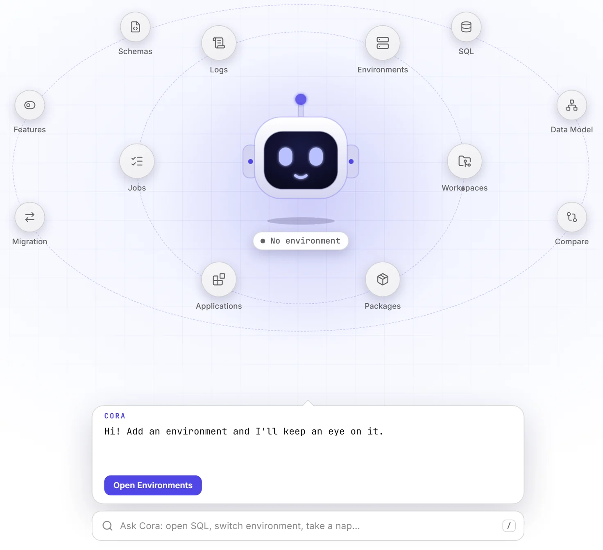

Ship Creatio work without living in the terminal.
A desktop workbench for Creatio developers: environments, Git workspaces, deployment, SQL and GitHub in one window.

Everything clio can do, with a real interface.
Companion for Creatio drives the tools you already have, clio, Git and the GitHub CLI, and turns every long operation into a job you can watch and cancel.
Connect
Reach every Creatio environment from one place.
Environments
Register environments, ping them, set a default and install cliogate. Credentials stay in clio and are never stored by the app.
Feature toggles
Read Creatio's feature toggles as they stand right now, switch them, and compare two environments side by side.
Code & Git
Source control for Creatio packages.
Workspaces & Git
Create workspaces, add packages, review colorized diffs, commit and inspect history.
GitHub, both ways
Create a repo straight from a workspace, pick an existing one, or deploy back from a repo to restore a broken environment.
Schema workspace
Browse schemas in a package explorer, open several as tabs and edit source in a full code editor with Creatio-aware suggestions.
Deploy
Move work between environments safely.
Environment to environment
Move a package or a whole application between environments, with a drift guard that blocks pushing over changes you haven't pulled.
Apply changes
Compile, flush Redis and restart as one tracked job, ordered so a failed compile stops before anything is torn down.
Data
See and move the data behind the app.
Data migration
Compare and copy lookup values, or any object's rows with its foreign keys mapped, between environments. A rollback script is written first.
Data model & ERD
Draw an entity-relationship diagram from the objects you pick, then pan, zoom and export it as SVG or PNG.
SQL & export
Run SQL against any registered environment, read results in a grid and export the full set to CSV or Excel.
Observe
Know what is running and why it failed.
Live logs
Watch an environment's own log as it happens. Filter while you read and pause without losing your place. Needs cliogate.
Jobs you can watch
Streamed output, safe cancellation of process trees, and a job history that survives restarts.
Failures, explained
When a job fails, Cora shows what went wrong, the likely cause and the first step to fix it, with a Retry button.
Pull, commit, publish, deploy.
Pull
Bring editable packages from an environment into a local workspace.
Commit
Review the diff and commit to Git, with history you can trust.
Publish
Create the GitHub repo from the app and push, private by default.
Deploy
Install to the next environment, with a backup and a drift check.
What's new
Updates ship often and install themselves after the first download.
Install and remove Creatio on your machine, and Ctrl+Alt+C
Install Creatio on Environments deploys a build to this PC through clio: pick the zip, a site name and a database server (PostgreSQL, MS SQL or Rancher), and it checks admin rights, the port, the database and Redis before anything is created. Uninstall Creatio removes a local instance after you type its name. Import from IIS registers the sites already on your machine, and Info shows an environment's version, database and licence. New clio versions are checked against NuGet directly, and when an update is blocked Cora names the processes holding clio open and offers to close just those. Press Ctrl+Alt+C anywhere to bring the window up with the command bar ready.
Meet Cora, a companion in place of the sidebar
The sidebar and Dashboard are gone. Cora, an animated robot, sits in the middle of the window with every screen on two orbits around him: everyday work on the inner ring, power tools like SQL, Compare and Migration on the outer one. His speech bubble reports a job's progress, a failure with its diagnosis and a Retry button, and new clio or app versions. Press / for a command bar that opens any screen or switches environment. Screens open in a panel with Cora docked beside them, and the environment pill under him changes your default environment. If the motion is too much, set his animations to Calm in Settings.
Requirements
- Windows 10 or 11 (x64), with a small signed installer.
- macOS 12 or newer, a universal build for Apple Silicon and Intel. First launch: right-click and Open (not yet notarized).
- The clio CLI, Git and the GitHub CLI installed. The app drives them.
- A registered Creatio environment, cloud or on-site.
Built for trust
- No credentials stored. clio owns your environment secrets.
- Every change is a job. Streamed output, one at a time per environment, safe to cancel.
- Signed updates. Each release is verified against the project key before it installs.
Questions Creatio developers ask
Deployment, data migration, Git and GitHub, clio and the rest, answered in a line or two.
What is Companion for Creatio?
Companion for Creatio is a free desktop app for Creatio developers on Windows and macOS. It puts a graphical interface over the clio CLI, Git and the GitHub CLI, so you can manage Creatio environments, keep packages in Git, deploy between environments, migrate data, run SQL and watch logs without typing commands.
Is there a GUI for clio?
Yes. Companion for Creatio drives clio for you: registering and pinging environments, installing cliogate, pulling and pushing packages, compiling, flushing Redis and restarting. Every operation runs as a job with streamed output that you can watch and safely cancel.
How do I deploy a Creatio package or application to another environment?
Pick the package or application, the source and the target environment, and deploy. A drift guard blocks pushing over changes you haven't pulled, an application deploy brings along the packages it depends on, and Apply changes then compiles, flushes Redis and restarts as one tracked job.
How do I migrate data between Creatio environments?
The Migration screen copies lookup values, any object's rows with their foreign keys mapped, and users and roles from one environment to another. You see what will change first, and a rollback script is written before anything is inserted. Compare shows which lookup values and feature toggles differ between two environments.
How do I put Creatio packages in Git and GitHub?
Create a workspace, pull editable packages from an environment into it, review colorized diffs and commit. You can create a GitHub repository straight from the workspace (private by default), or deploy back from a repository to restore a broken environment.
Can I run SQL against a Creatio environment?
Yes. Run SQL against any registered environment, read the results in a grid and export the full result set to CSV or Excel.
Can I watch Creatio logs live?
Yes. The Logs screen streams an environment's own log as it happens, with filtering and pause. It needs cliogate installed on the environment, which the app can install for you.
Can it install Creatio on my own machine?
On Windows, Install Creatio deploys a Creatio build to your PC through clio, with PostgreSQL, MS SQL or Rancher as the database server, and checks administrator rights, the port, the database and Redis before anything is created. Import from IIS registers the Creatio sites already on your machine.
Does Companion for Creatio store my Creatio passwords?
No. Credentials stay in clio, which owns your environment secrets. The app never stores them.
Is Companion for Creatio free, and is it made by Creatio?
It is a free download for Windows and macOS. It is an independent community tool built by one developer, and is not affiliated with, endorsed by, or an official product of Creatio.
What do I need to run it?
Windows 10 or 11 (x64) or macOS 12 or newer, with the clio CLI, Git and the GitHub CLI installed, and a registered Creatio environment, cloud or on-site.
Found a bug? Want something added?
Companion for Creatio is built by one developer, and every report shapes what gets fixed next. Reports go through GitHub issues, so you'll need a free GitHub account.
Get Companion for Creatio
It reuses the clio, Git and GitHub tools you already have.
Windows10 and 11, x64
macOSApple Silicon and Intel
.dmg, signed. First launch: right-click and Open.Download counts update live.